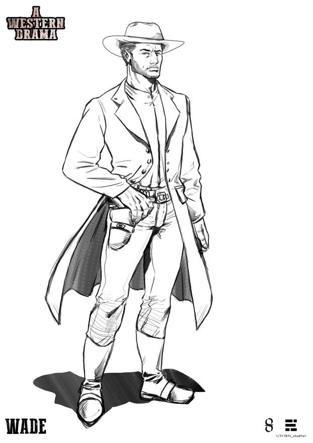
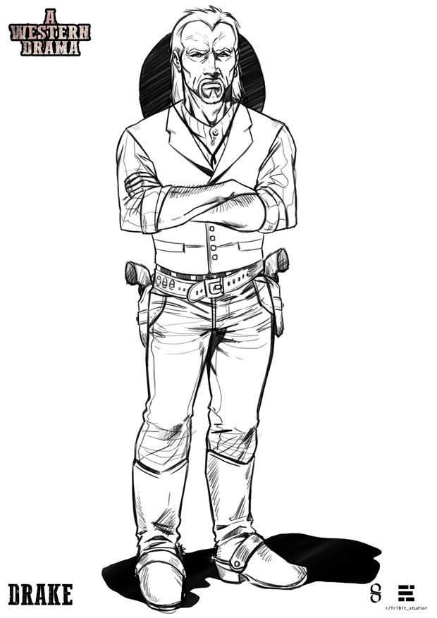
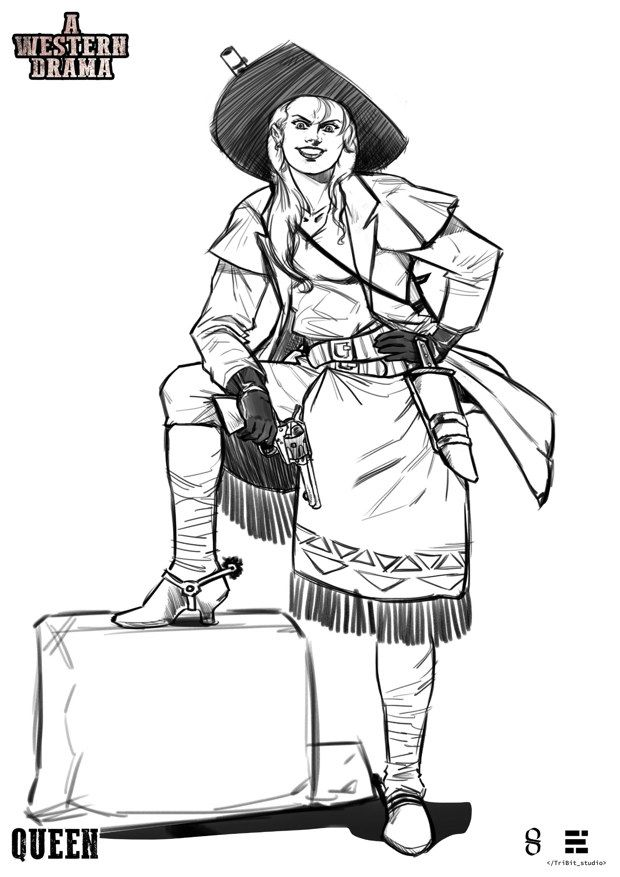
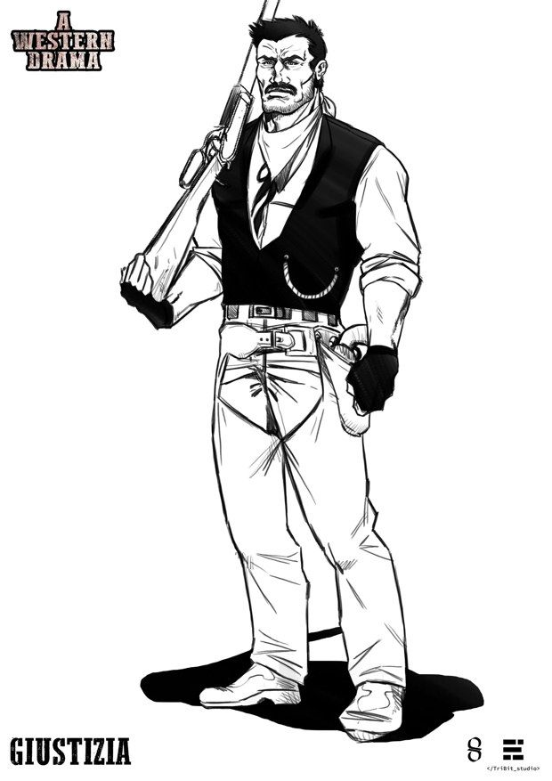
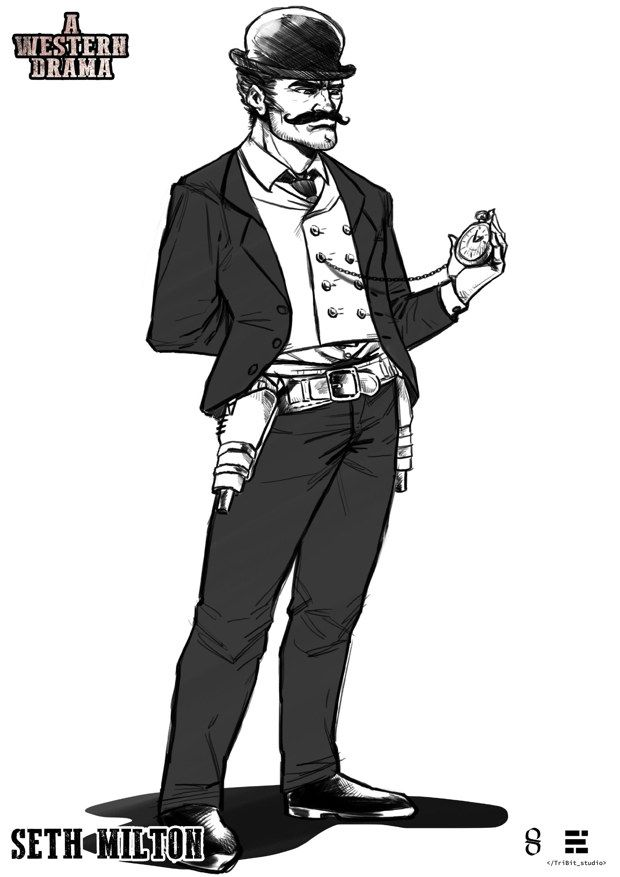
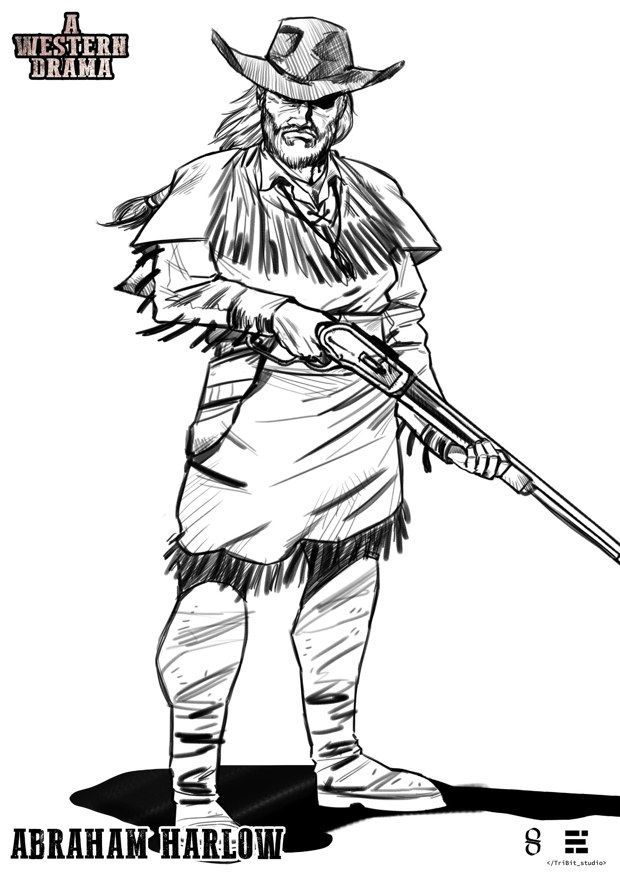

Character bible
Wade, Drake and the Four
A Western Drama · 2020
I wrote the character documents the whole production worked from. Each entry covers look, weapons, psychology and, for the voice cast, how the character sounds. Minor characters are tagged with short codes and only need voices that tell them apart: the document states how many different voices a group needs (five for the horseback thieves, for example).

Wade
Protagonist · Bounty hunter, about 28
Haunted, principled, relentless
Raised by Drake to hunt for profit without pity, yet he has developed a sense of justice his master lacks. Haunted by recurring dreams of figures wrapped in flames. Everything changes when he finds out the truth about Drake.

Drake Farr
Wade’s master · About 50
Greedy, protective, manipulative
Fierce and protective at once. Money is his only desire, and it led him to his worst act. A master–student bond Wade keeps trying to overturn, built on a lie that cannot hold. Two revolvers worn upside down, handles outward.

Queen
Second of the Four of the Prophecy
Ruthless, sadistic, self-made
A frontier woman, a world away from the well-bred ladies of the East: a sharp shooter, ruthless and sadistic, who smuggles and shelters outlaws in her fortress. She fled the “civilised” East and built an empire in the West.

Giustizia
One of the Four · Bank robber, real name John Crouch
Vengeful, sadistic, compulsive
An outlaw since his father was killed when he was a boy. His chosen name is the justice he believes he is restoring. Left-handed, so the pistol sits on the left. Sadistic, and unable to resist one more robbery.

Seth Milton
Last of the Four · Gang leader
Distrustful, selfish, opportunistic
The frontier villain taken one step further: he trusts no one and lives only for himself. At the end of the game he stands with the “good”, clearing land for the railway. The bowler hat and pocket watch arrive once he believes he is a man of law.

Abraham Harlow
Third of the Four · Ex-cardsharp and sheriff
Enigmatic, defiant, converted
Rumoured to have been kidnapped and brainwashed by natives. The player discovers that he joined their cause by choice, after witnessing a massacre. His outfit mixes Western clothes with native elements.
Character art by TriBit Studio.